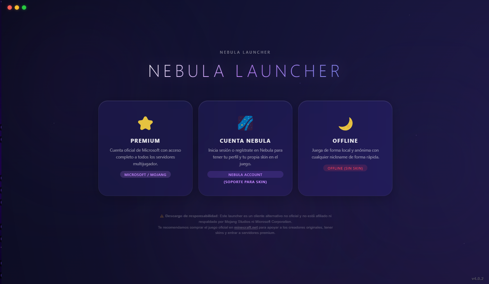
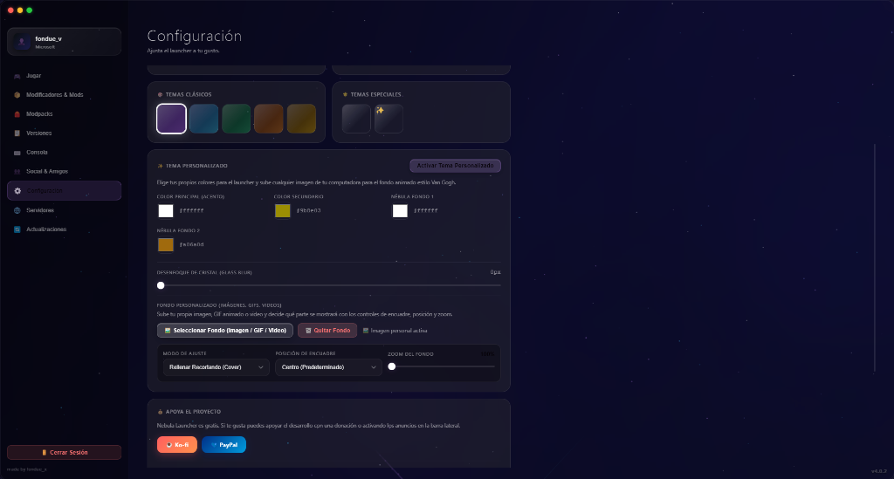
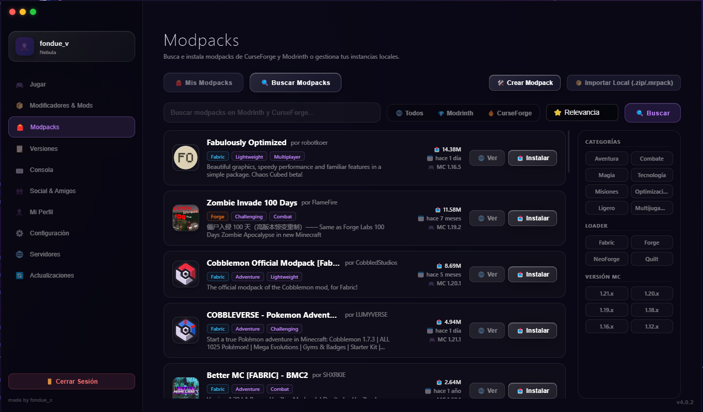
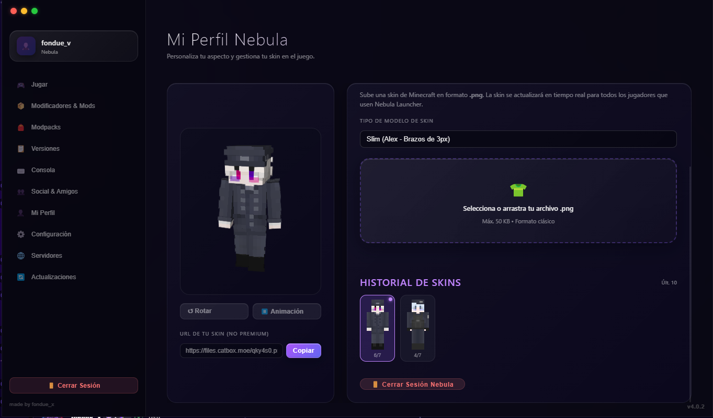
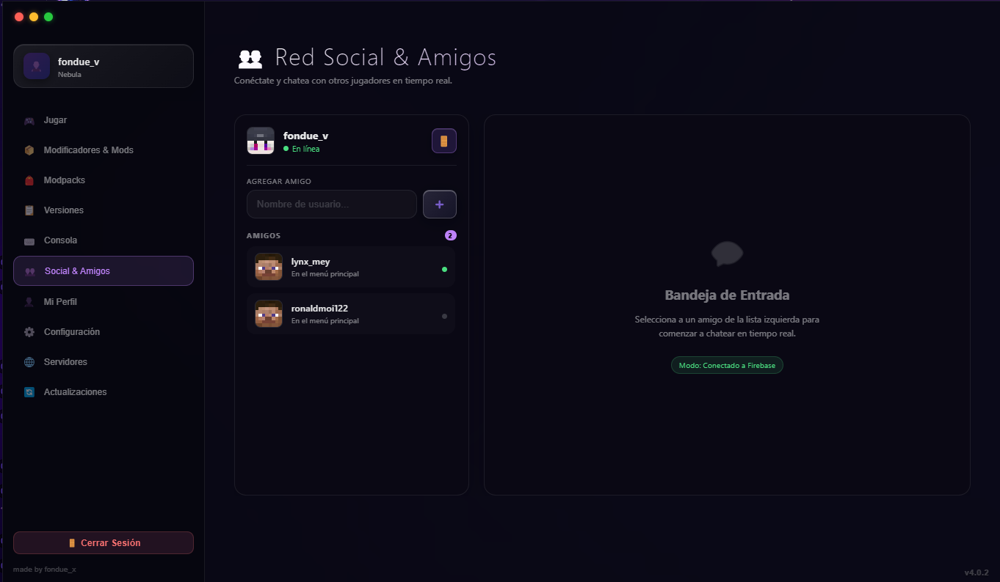
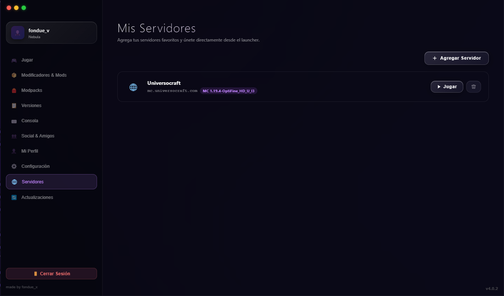

Cuentas oficiales
Nebula Launcher está orientado al uso con cuentas oficiales de Microsoft y Minecraft.
Consulta las funciones de Nebula Launcher para perfiles de Minecraft y las opciones de personalización disponibles en la versión instalada. Revisa los requisitos y notas de publicación antes de usarla.

Nebula Launcher reúne opciones para gestionar perfiles, personalizar la interfaz y consultar recursos de Minecraft. Comprueba las funciones y requisitos de la versión que descargues.
Personaliza tu launcher con imágenes, GIFs animados o videos en alta definición en bucle. Ajusta el encuadre, la posición y el zoom con total libertad.
Interfaz con efecto visual de cristal acelerado por hardware. El uso de recursos y la fluidez dependen del equipo y de los ajustes gráficos.
Consulta los recursos de mods disponibles y confirma la versión de Minecraft, el cargador y las dependencias que indica cada proyecto antes de instalarlos.
Consulta las opciones sociales disponibles en la versión instalada. La actividad, los mensajes y las imágenes dependen de los servicios y de la conexión.
Revisa las opciones de avatar y aspecto disponibles en la versión instalada; las funciones de cuenta y sincronización dependen de los servicios compatibles.
Administra perfiles del juego y consulta las opciones de cuenta disponibles en la versión instalada.
Al iniciar el juego, el launcher puede ocultarse en segundo plano según la configuración. El uso de memoria y CPU restante depende de los procesos activos del sistema.
Administra perfiles de juego y revisa las opciones de importación disponibles en la versión instalada. Comprueba los archivos y el directorio del perfil antes de instalar.
El modo de compatibilidad gráfica puede ofrecer opciones adicionales en algunos equipos. El soporte depende de la GPU, el controlador, la versión de Minecraft y la configuración; consulta las notas de la versión para conocer los requisitos.
Imágenes ilustrativas de la interfaz; consulta las funciones y notas de la versión instalada antes de descargar.
Elige cualquier video en bucle, GIF animado o imagen de alta resolución para transformar el ambiente de tu launcher. Ajusta el estilo de encuadre, la alineación y la escala con controles intuitivos.

Consulta y administra perfiles de modpacks. Si una versión ofrece Código Nebula, puedes compartir la configuración asociada; comprueba los requisitos y revisa el directorio del perfil antes de instalar.

Previsualiza las opciones de avatar disponibles en la versión instalada. La gestión de skins, capas o sincronización depende de la cuenta y de los servicios compatibles.

Consulta y utiliza las funciones sociales disponibles en la versión instalada. La actividad y el envío de mensajes o imágenes dependen de los servicios y de la conexión.

Organiza las direcciones de tus servidores y consulta la información de conexión que esté disponible. El estado mostrado depende de la red y de la respuesta del servidor.

Consulta las funciones disponibles y las notas de publicación de la versión que utilizas.
Nebula Launcher está orientado al uso con cuentas oficiales de Microsoft y Minecraft.
Publicamos tutoriales prácticos para instalar mods, configurar Java y resolver problemas frecuentes.
El código, las notas de versión, los requisitos y los canales de soporte se encuentran disponibles públicamente.
Guías de instalación, compatibilidad y solución de problemas con referencias a la documentación de cada proyecto. Las recomendaciones generales no son benchmarks; cada comparativa debe indicar sus propias condiciones de prueba.
Empieza por identificar el primer error relevante, anota el contexto y contrasta los nombres y versiones citados con las dependencias instaladas. Un registro aporta pistas, no siempre identifica por sí solo una causa única.
Revisa el mensaje del launcher, las últimas líneas del registro y los cambios recientes; comprueba Java, cargador y mods antes de probar una modificación reversible.
Diagnostica pausas de carga en HDD, revisa el espacio y la actividad de disco y prueba ajustes seguros sin asumir una ganancia fija.
Entiende el heap, revisa las opciones admitidas por tu runtime y compara cambios solo cuando un diagnóstico lo justifique.
Comprueba el runtime de Java esperado por tu versión de Minecraft y el cargador; encuentra pistas de incompatibilidad de clases y revisa qué Java usa tu launcher.
Aprende qué carpetas de juego se comparten entre perfiles, cómo configurar directorios separados y qué datos conviene respaldar antes de mover archivos.
Únete a la comunidad para consultar novedades y conversar con otros jugadores. La disponibilidad de ayuda depende de quienes participen en el servidor.
Consulta las condiciones de uso de la versión en el repositorio. Si deseas apoyar el proyecto, puedes hacer una contribución voluntaria.